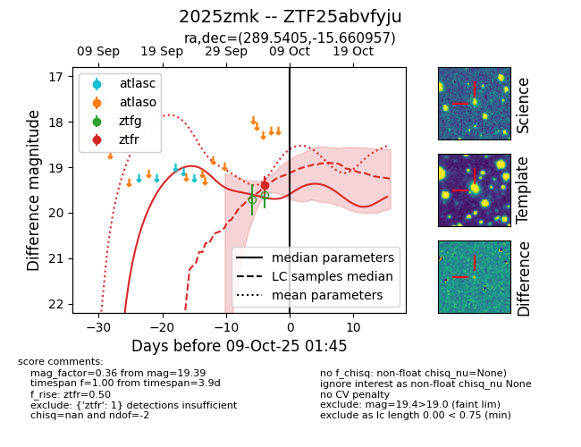
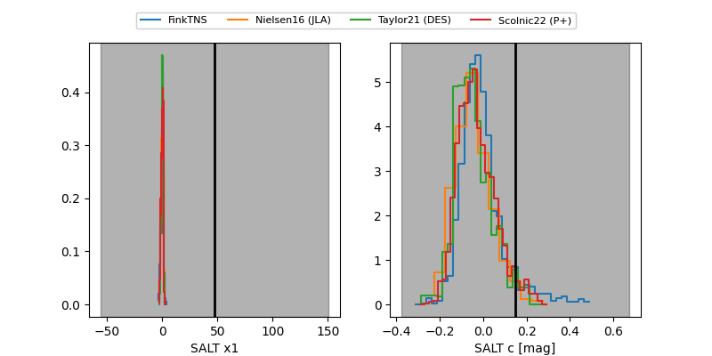

FINK: ZTF25abvfyju
Lasair: ZTF25abvfyju
ALeRCE: ZTF25abvfyju
TNS: 2025zmk
YSE: 2025zmk
ZTF25abvfyju (ztf,fink)
2025zmk (tns,yse)
equatorial (ra, dec) = (289.5405,-15.66096)
galactic (l, b) = (21.7431,-12.87292)


last ztfr=19.39
1 ztfr detections